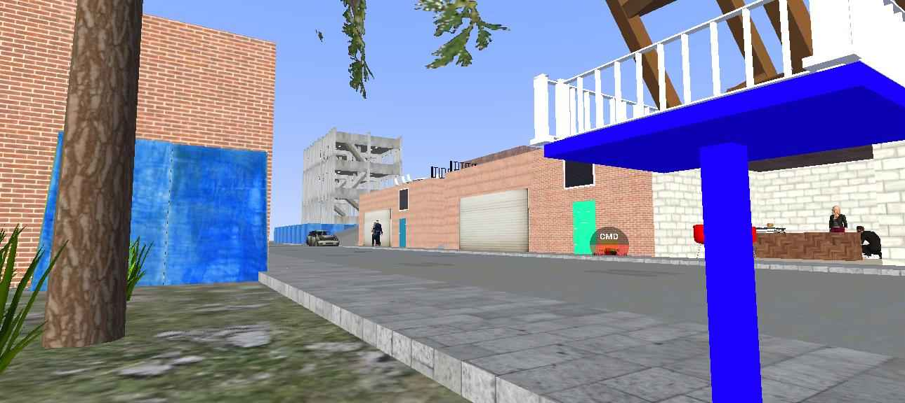

Jromaña
¡Hola! Soy Jromaña, creador de contenido y amante de los juegos. En mi canal de YouTube encontrarás videos sobre Los Ángeles Crimes (LAC), y próximamente también contenido sobre Polyfield. Me gusta crear mapas, experimentar con el juego y compartirlos con mi comunidad. ¡Gracias por visitar mi sitio web, donde podrás encontrar mis proyectos, redes y descargas oficiales!
Mis Mapas LAC

LatamV1
Fecha: 06/07/2025